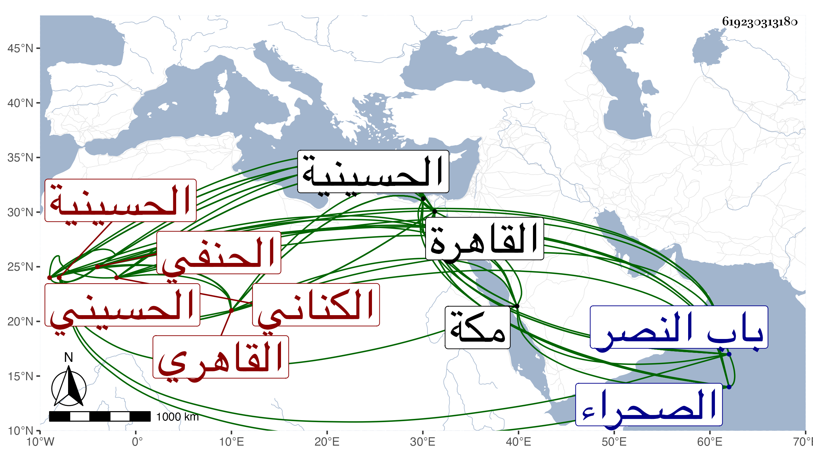

0902Sakhawi.DawLamic.ITO20230111-ara1.EIS1600.619230313180
Biography ID: 619230313180
344
عمر بن علي بن فارس السراج أبو حفص الكناني القاهري الحسيني الحنفي ويعرف بقاري الهداية تمييزا له بذلك عن سراج آخر كان يرافقه في القراءة على العلاء السيرامي شيخ البرقوقية . ولد بالحسينية ظاهر القاهرة وقيل لكونه حلها على أكمل الدين ست عشرة مرة وصار أفضل منه فالله أعلم ، ونشأ بالقاهرة وتقلد حنفيا حيث وعد يلبغا كل من تحنف بخمسمائة كما تقدم في عبيد الله بن عوض ، واشتغل بالعلوم على أئمة عصره فكان ممن أخذ عنه العلاء المشار إليه ولازمه حتى قرأ عليه الهداية بل قرأها قبل ذلك مرتين أو ثلاثا ، وأكمل الدين وكذا رأيت بخط بعض الثقات أنه أخذ عن الشهاب محمد بن خاص بن حيدر الفقيه وبخطي مما يحتاج لتحرير أنه أخذ عن البدر بن خاص بك فأظنه الذي قبله في آخرين كالبلقيني فإنه قرأ عليه تصنيفه محاسن الاصطلاح والزين العراقي لازمه في ألفيته وشرحها وغير ذلك وسمع السيرة لابن سيد الناس علي الفرسيسي بل وقرأها على ابن الشيخة وكلا من الصحيحين على البلقيني وأولهما على التقي بن حاتم وثانيهما مع الشاطبية ومختصر ابن الحاجب الأصلي على الجمال الأسيوطي لقبه بمكة حيث حج وجاور في آخرين من الأكابر دراية ورواية وأكثر المطالعة والاشتغال طول عمره ، وأقام بالظاهرية القديمة ومكث مدة عزبا ولما ولي الكمال بن العديم قضاء الحنفية التمس منه إقراء ولده ناصر الدين محمد ففعل وأحسن إليه الكمال كثيرا ونزله في جهات من أطلاب وبعض تداريس وتزوج جارية من بيتهم ولا زال يترقى في الفقه وأصوله والعربية والتفسير وغيرها مع المشاركة في فنون كثيرة حتى انتهت إليه رياسة الحنفية في وقته بغير مدافع مع توقف في ذهنه وعدم إقبال على تصنيف ونحوه ، وتصدى للإفتاء والتدريس فكثرت تلامذته والأخذ عنه ، وانتفع به الأئمة وصار الأعيان في المذهب كابن الهمام والأقصرائي فمن دونهما من تلامذته بل لم يكن المعول إلا على فتياه لجلالته وعظمته في النفوس ومهابة السلطان فمن دونه له كل ذلك مع عدم التفاته لبني الدنيا وحرصه عليها فيما قيل واقتنائه الكتب الكثيرة ومزيد تواضعه وجميل سيرته واقتصاده في ملبسه ومركبه وعدم امتناعه من تعاطي شراء ما يحتاج إليه وحمله غالبا طبق الخبز أحيانا وكونه مع ذلك لا يزداد إلا وقارا وأبهة وربما رفعت إليه الفتيا وهو بالسوق في قضاء حاجته فيخرج محبرة من جيبه ثم يكتب ، ومحاسنه كثيرة وقد درس للمحدثين بالبرقوقية وللفقهاء بعدة مدارس كالناصرية والأشرفية القديمة والظاهرية القديمة محل سكنه والأقبغاوية المجاورة للأزهر وأعاد بجامع طولون وأثرى من كثرة وظائفه بعد التقلل بل استقر بأخرة في مشيخته الشيخونية بعد الشرف بن التباني في صفر سنة سبع وعشرين ، وكان باشر الدرس فيها قبل ذلك نيابة عن تلميذه ناصر الدين بن العديم ورام التوجه إليها حين استقراره فيها من سكنه بالظاهرية ماشيا فبادر الأشرف وأرسل إليه فرسا وألزمه بركوبها ففعل لكن مع أخذ عصا بيده ليسوقها بها ونزوله عنها برجليه معا من جهة واحدة كما ينزل راكب الحمار ، والثناء عليه مستفيض . قال النجم بن حجي : كان فاضلا في الفقه مشاركا في العلوم العقلية يستحضر الهداية خيرا منجمعا عن الناس ، وقال المقريزي : لم يخلف بعده مثله في إتقان فقه الحنفية واستحضاره مع الدين والخير والعفة عما بأيدي الناس من الوظائف ، وكان الجلال البلقيني يقول : هو أبو حنيفة زمانه ، وكان بعضهم يرجحه على شيخه أكمل الدين ، وبلغنا من غير واحد أنه كان يتوضأ كثيرا على الفسقية بالبرقوقية كأنه ويعيد الماء فيها ويضع عمامته إلى جانبه ليمسح على جميع رأسه خروجا من الخلاف وربما نسي عمامته ويصلي بدونها وربما ذهب بدونها حتى تحمل إليه وممن حملها إليه الشمس ابن عمران الغزي المقرئ وممن شاهده يتوضأ كذلك العز عبد السلام القدسي رحمه الله ولم يزل على جلالته وعلو مكانته حتى مات بعد بيسير في يوم الأحد ثاني عشري ربيع الثاني سنة تسع وعشرين بالقاهرة وصلي عليه بمصلى باب النصر في محفل تقدمهم شيخنا ودفن بحوش الأشرف برسباي بجانب البرقوقية من الصحراء ووهم من قال بتربة جوشن خارج باب النصر ولم يخلف بعده مثله وقد زاد على الثمانين وخلف ابنة وابنا صغيرا وشيئا من الدنيا ، وممن سمع منه شيخنا الزين رضوان المستملي وروى لنا عنه في متبايناته الحديث السابع والثلاثين بل وأحضره في ختم صحيح مسلم حين قرأه شيخنا على ابن الكويك واستجازه للحاضرين ، وذكره شيخنا في إنبائه باختصار وصدر ترجمته بالخياط الطواقي وقال أنه كان في أول أمره خياطا بالحسينية ثم نزل في طلبة البرقوقية وتمهر في الفقه وغيره واستقر بعده في الشيخونية الزين التفهني وفي سائر وظائفه ولده وناب عنه فيها العز عبد السلام البغدادي ، وكذا اختصر العيني ترجمته ووصفه فيها بتوقف الذهن والحرص جدا على الدنيا رحمه الله وإيانا .
